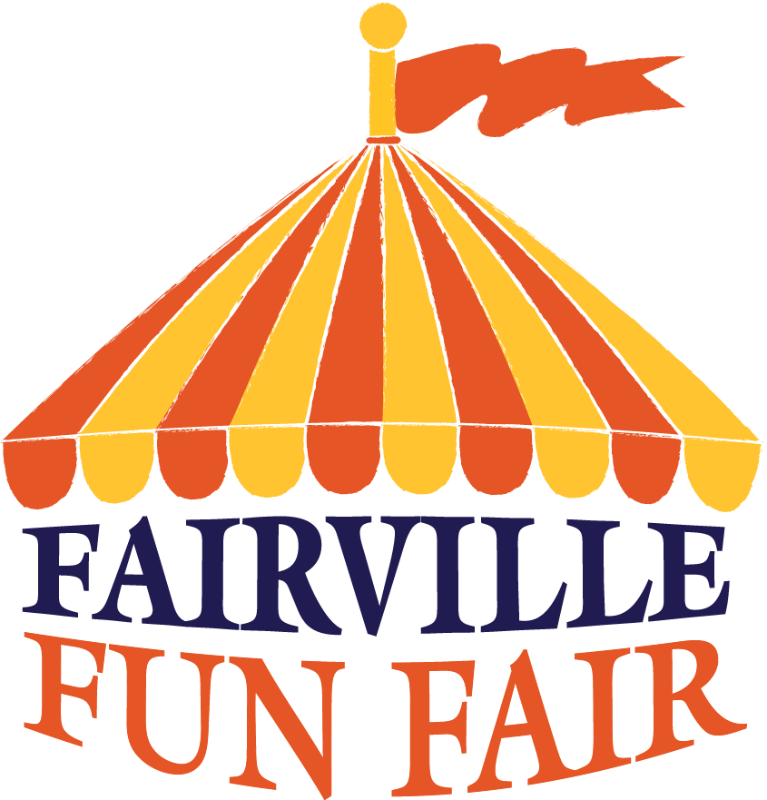

| Facilitati |  Atractii |
|---|
Facilitatile de care va dispune locatia noastra :
6 camere de 1 respectiv 2 persoane(tip single sau dublu)
Fiecare camera va fi dotata cu baie proprie,televizor,wi-fi,aer conditionat si terasa.
Camera de relaxare tip living dotata cu o masa de biliard,2 mese de ping pong,o masa de fotbal de masa si un spatiu pentru cei mici unde se pot juca.
Locatia noastra va mai fi dotata cu un foisor acoperit in intregime pentru cei ce vor sa petreaca timp cu cei dragi
Locatia va mai dispune de un loc de gratar unde cei care trec pasul pensiunii pot sa isi gateasca singuri si sa se imprieteneasca cu ceilalti in jurul unui mic foc de tabara.
Locatia dispune de o parcare cu 15 locuri pentru cei care vor veni cu masinile.
Parcarea din fata va fi cu pavele si acoperita.
 |
||
|---|---|---|